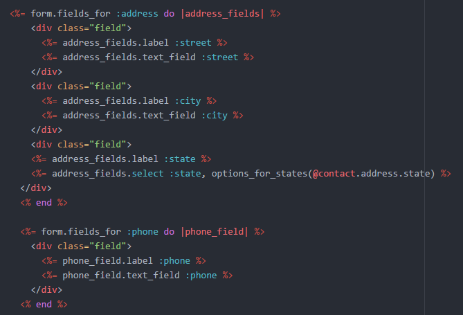

Ruby (1995)
Ruby é uma linguagem de programação dinâmica, de alto nível e orientada a objetos, criada pelo programador japonês Yukihiro Matsumoto, no início da década de 1990. Ela foi projetada com foco na simplicidade, na produtividade do desenvolvedor e na legibilidade do código.
Uma das principais características é sua sintaxe elegante e expressiva, que se assemelha a uma linguagem natural. Isso torna o código Ruby fácil de ler e entender, favorecendo a colaboração entre os desenvolvedores e facilitando a manutenção do código ao longo do tempo.

Ela é uma linguagem de programação dinâmica, de alto nível e orientada a objetos, que se destaca por sua sintaxe elegante, legibilidade do código e ênfase na diversão do desenvolvimento. Sua comunidade ativa, bibliotecas abrangentes e filosofia de simplicidade tornam Ruby uma escolha popular entre os desenvolvedores para uma variedade de projetos e aplicações.
Atividade desenvolvida como extensão no projeto
PACEX/Mundo Tech do curso de análise e Desenvolvimento de Sistemas
Unipar - Cascavel